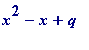
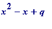

Certain values of the j( z )-elliptic modular function
The remarkable -elliptic modular function of the complex variable z ( with Im( ) > 0 ) is defined in many ways, but one of them is:
,
where
is the sum of the cubes of the factors of
n
From (e.g.) the 1966 Springer
Seminar on Complex Multiplication, a contribution from S. Chowla
:
Let p be prime,
,
and suppose the imaginary quadratic field
 has class number 1
[i.e. its 'integers' factor uniquely as products of 'primes']
. Then
is an
[ordinary]
integer
, which is remarkably
[from the work of Weber]
a perfect cube. Under the same restrictions on the class-number it is also true
[Weber]
that
(
) is an
[ordinary]
integer, and we have the following
has class number 1
[i.e. its 'integers' factor uniquely as products of 'primes']
. Then
is an
[ordinary]
integer
, which is remarkably
[from the work of Weber]
a perfect cube. Under the same restrictions on the class-number it is also true
[Weber]
that
(
) is an
[ordinary]
integer, and we have the following
Theorem. If the class number of
 is 1, where p is a prime greater than 3, then the Diophantine equation
has a solution in integers with
, where {u} denotes the nearest integer to u
.
is 1, where p is a prime greater than 3, then the Diophantine equation
has a solution in integers with
, where {u} denotes the nearest integer to u
.
It is believed [Chowla delivered his talk in 1957] that p = 7, 11, 19, 43, 67, 163 are the only primes greater than 3 for which the class number of is 1.
>
p := 163;
x := round(exp(Pi*sqrt(p)/3));
y := sqrt((x^3 + 1728)/p);
>
Incidentally a 1913 theorem of Rabinovitch (see, e.g., Goldfeld's 1985 AMS
Bulletin
article) intimately relates the above '
p
' primes to remarkable prime-producing polynomials. Almost everyone has encountered the discovered-by-Euler quadratic
 , which is prime for every integral value of
x
between 1 and 40 inclusive. The '41' is tied - by Rabinovitch's theorem to the '163' via
, and indeed the other primes above (7, 11, 19, 43 and 67) produce similar prime-producing polynomials in identical fashion.
, which is prime for every integral value of
x
between 1 and 40 inclusive. The '41' is tied - by Rabinovitch's theorem to the '163' via
, and indeed the other primes above (7, 11, 19, 43 and 67) produce similar prime-producing polynomials in identical fashion.
The final ten prime values in the case of the polynomial ('live' I can show all of them):
>
for x from 31 to 40 do
print([x^2 - x + 41, isprime(x^2 - x + 41)])
od;

>
and all of them for the p = 67 example, where = 17, giving :
>
for x to 16 do
print([x^2 - x + 17, isprime(x^2 - x + 17)])
od;
>
Here are two j-values:
, and
Finally I remark that it had been a long-standing question - going back as far as Gauss (in connection with his wider
class-number problem
) - as to whether or not 163 was the largest prime for which the class number of
 is 1; equivalently, because of Rabinovitch, whether or not 41 was the largest prime
q
(=
) such that

is prime for all
x
between 1 and
. That question was answered in the affirmative by Heegner, Baker, and Stark in the early 50s and mid 60s. There the history is truly complicated.
is 1; equivalently, because of Rabinovitch, whether or not 41 was the largest prime
q
(=
) such that

is prime for all
x
between 1 and
. That question was answered in the affirmative by Heegner, Baker, and Stark in the early 50s and mid 60s. There the history is truly complicated.
Finally, today, the 6th of May 2004, is the 50th anniversary of the breaking by Roger Bannister in Oxford of the four-minute mile barrier . I can't resist pointing out that all the numerical omens were just right for him on that history-making day:
- '6' - as in May 6th - is as everyone knows the first perfect number
- The number Bannister wore on his vest on that memorable day was '41', which features above in the - what one might call - prime record breaking polynomial, and the '41' ties in with the '163' in the final one of the above modular equations
- The '5280' which features in the previous one - the one '41' surpassed and set a record - is of course the number of feet in a mile (a fact perhaps lost on those of you who grew up with the metric system)